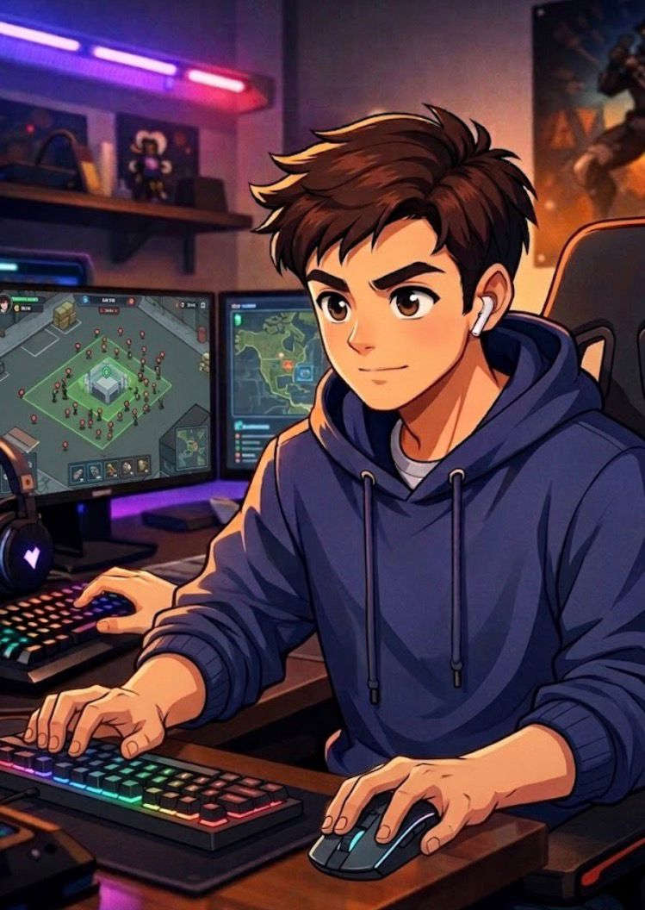

Nome:Zombie Attack
Gênero:Ação e Sobrevivência
Zombie Attack é um jogo de ação e sobrevivência ambientado em uma cidade completamente destruída após uma misteriosa infecção que transformou a maior parte da população em zumbis. O jogador assume o controle de Jake, um ninja habilidoso e um dos últimos sobreviventes, que precisa lutar diariamente para continuar vivo em meio ao caos.
Armado com sua katana, Jake enfrenta hordas de zumbis que surgem constantemente de todos os lados. O jogador deve utilizar movimentos rápidos, bons reflexos e estratégias inteligentes para atacar os inimigos e evitar ser cercado. Cada momento no jogo exige atenção, já que o perigo pode surgir a qualquer instante.
O principal objetivo é sobreviver o maior tempo possível, enfrentando desafios cada vez mais difíceis. Com o passar do tempo, os zumbis se tornam mais numerosos, tornando a sobrevivência ainda mais desafiadora. O jogo proporciona uma experiência intensa, focada em ação, agilidade e tomada de decisão rápida.
JogarEm um mundo devastado por uma infecção, a cidade foi completamente destruída e tomada por zumbis. Ruas vazias e prédios em ruínas formam um cenário onde o perigo nunca desaparece. O silêncio é constante, quebrado apenas pelos sons das criaturas que vagam sem parar em busca de qualquer sinal de vida.
Jake é um dos poucos que ainda resistem. Como um ninja treinado, ele aprendeu a lutar, se mover rapidamente e reagir sob pressão. Agora, essas habilidades são tudo o que o mantém vivo. Com sua katana, ele enfrenta os zumbis que surgem constantemente, atacando sem parar e tentando cercá-lo a todo momento.
A sobrevivência exige atenção total. Um erro pode ser o fim. Os inimigos aparecem de todos os lados, obrigando Jake a se movimentar o tempo todo, atacando e desviando em sequência. Não existe um lugar seguro, não existe pausa, apenas combate contínuo contra uma ameaça que nunca termina.
Com o passar do tempo, a situação se torna ainda mais intensa. Os zumbis aumentam em número, pressionando cada vez mais o jogador. Resistir por mais tempo significa enfrentar desafios maiores, exigindo rapidez, estratégia e precisão em cada movimento.
Jake luta sozinho, cercado por um mundo destruído. Ainda assim, ele continua avançando, enfrentando cada onda de inimigos com determinação.
Neste cenário, sobreviver não é apenas um objetivo, é a única opção.
Jogar
Nome:Fernando
Idade:20 anos
Perfil:Fernando estuda e trabalha, tendo uma rotina corrida no dia a dia. Por não ter muito tempo disponível, ele prefere conteúdos mais diretos e objetivos, sem excesso de informações.
Ele gosta de jogos simples, mas que ofereçam desafio e sejam um bom passatempo. Prefere experiências rápidas, que possa jogar em pequenos momentos livres, sem precisar aprender mecânicas muito complexas.